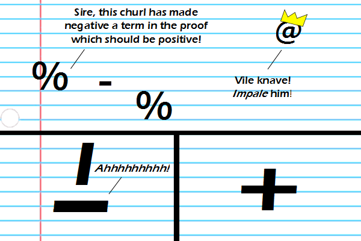

Comic JK 778
When I Feel Like It
⇤
<
?
>
⇥

⇤
<
?
>
⇥
Forum
.
RSS
.
Digg
.
Facebook
.
Reddit
.
Twitter
.
Stumbleupon
Enter your thoughts on number 778 here. Please, no spamming, trolling, or fooling around with maths. asdfasdf Your mother thinks a triple negative makes positive and a double negative is regular. Yup, that's how it goes. Doesn't work? does it work when positive? MAKE IT HAPPEN! > It will work. I'm absolutely positive! This comes about due to lack of care when determining the signs of the numbers you plug in. Signs should always work out if you are careful. >This is the joke >>What? >>>It's a satire of a common (totally invalid) mathematical technique I think I'm too good at math to understand this. It seems like a pretty juvenile mistake to make. >You have much to learn my apprentice if at first you don't succeed, present your data as statistics! I always do this. Except when I do, it's "Oh, this works out when positive ... let's take a look at the line before ... no, that follows ... before that? Oh, look, I plugged in those two numbers but that means I'm multiplying i^2, i, i and a negative real number, AND there's a negative sign. Damn it, forgot that negative number, I guess." *impales a few minus signs*